Filmy |
Promítáme
 |
Spider-Man: Bez domova Premiéra: 16.12.2021 Vůbec poprvé ve filmové historii je odhalena totožnost Spider-Mana a náš dobrý soused již nedokáže oddělit svou zodpovědnost superhrdiny od běžného života, čímž se jeho nebližší ocitnou ve velkém nebezpečí. Spider-Man požádá Doctora Strange, aby mu pomohl... |
 |
Eternals Premiéra: 04.11.2021 Snímek Eternals představí zcela nový tým superhrdinů filmového vesmíru Studií Marvel. Epický příběh se odehrává tisíce let a sleduje skupinu nesmrtelných hrdinů, kteří jsou nuceni vystoupit ze stínů, aby se opětovně spojili proti nejstaršímu nepříteli lidstva, Deviantům... |
 |
Matrix Resurrections Premiéra: 23.12.2021 Již téměř dvacet let žije Neo (Keanu Reeves) zdánlivě poklidný život jako Thomas A. Anderson v San Franciscu. Navštěvuje terapeuta, který mu předepisuje modré pilulky. Potkává každý den Trinity (Carrie-Anne Moss), ale navzájem se nepoznávají. Jednoho dne narazí na Morphea, který mu nabídne červenou pilulku, aby znovu otevřel svou mysl Matrixu. |
 |
Encanto Premiéra: 25.11.2021 Film Encanto z dílny Walt Disney Animation Studios vypráví příběh neobyčejné rodiny Madrigalových. Madrigalovi žijí ukryti v kouzelném domě v pulzujícím městečku v kolumbijských horách, na podivuhodném a očarovaném místě zvaném Encanto. Kouzlo Encanto způsobilo, že každé dítě v rodině má jedinečný dar... |
Nadcházející
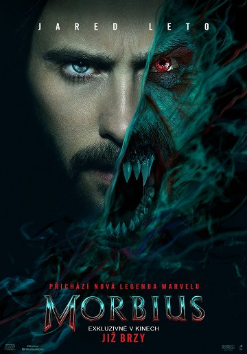 |
Morbius V kinech od: 1.4.2022 Doktor Morbius trpí vzácnou a smrtelnou krevní chorobou. S úmyslem zachránit druhé, kterým hrozí stejný osud, se Michael rozhodne k zoufale riskantnímu činu. Zdánlivý úspěch přinese lék, který je však dost možná nebezpečnější než sama smrtelná choroba, neboť promění léčitele v lovce. |
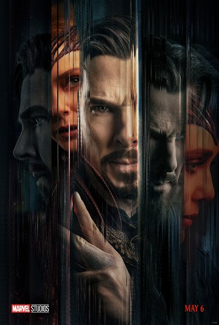 |
Doctor Strange v mnohovesmíru šílenství V kinech od: 05.05.2022 Dr. Stephen Strange sešle zakázané kouzlo, které otevře dveře do multivesmíru, včetně alternativní verze sebe sama, jehož hrozba pro lidstvo je příliš velká i pro spojené síly Strange Wonga a Wandy Maximoff. |
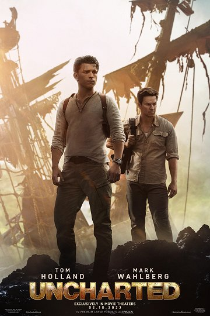 |
Uncharted V kinech od: 10.02.2022 Potomek slavného hledače pokladů sira Francise Drakea, Nathan Drake, konečně našel stopu k prokleté zlaté sošce ze Zlatého města v El Doradu. Když se však vydá na cestu, za zády se mu náhle objeví zakeřní konkurenti. |
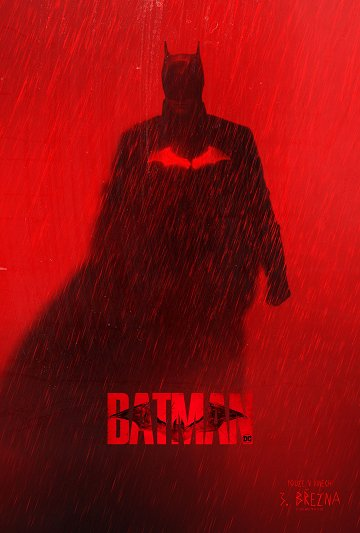 |
The Batman V kinech od: 03.03.2022 Ve svém druhém roce boje se zločinem Batman odhaluje korupci v Gotham City, která se spojuje s jeho vlastní rodinou, zatímco čelí sériovému vrahovi známému jako Riddler. |
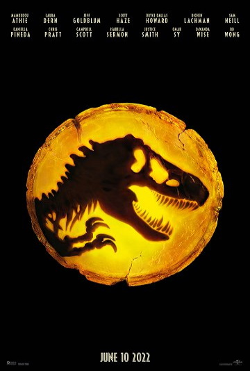 |
Jurský svět: Nadvláda V kinech od: 09.06.2022 Dinosauří a lidská civilizace se konečně střetly. Zdá se, že místo na planetě Zemi je jen pro jeden druh. Velkolepé vyvrcholení ságy, která začala v Jurském parku Stevena Spielberga. |
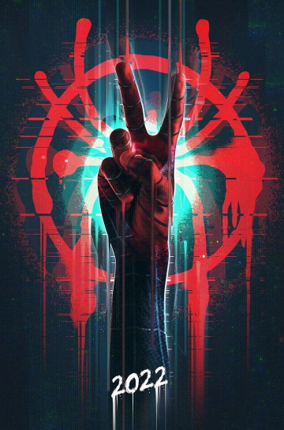 |
Spider-Man: Across the Spider-Verse - Part One V kinech od: 27.10.2022 Miles Morales vrací v další kapitole Spider-Verse ságy. Čeká na něj epické dobrodružství, které přátelského souseda Spider-Mana transportuje z Brooklynu napříč mnohovesmírem, aby pomohl Gwen Stacey a nové skupině Spider-lidí proti padouchovi silnějšímu než cokoliv, proti čemu se v minulosti postavili. |
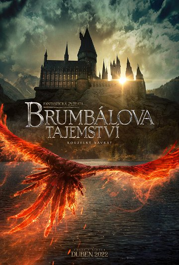 |
Fantastická zvířata: Brumbálova tajemství V kinech od: 07.04.2022 Profesor Albus Brumbál ví, že mocný temný kouzelník Gellert Grindelwald je na cestě převzít moc nad kouzelnickým světem. Protože není schopen ho zastavit sám, pověří magizoologa Mloka Scamandera,... |
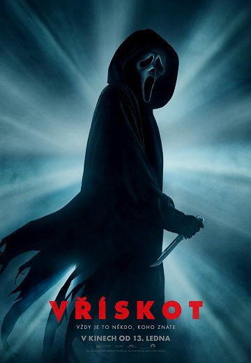 |
Vřískot V kinech od: 13.1.2022 25 let po brutálních vraždách v městečku Woodsboro se na scéně objevuje nový vrah, který si nasadil na obličej kultovní bílou masku. Tentokrát se zaměří na teenagery, oživí tím dávno pohřbenou noční můru a opět odkryje strašidelnou minulost města. |
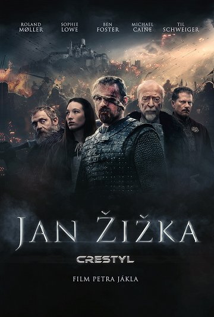 |
Jan Žižka (CZ) V kinech od: 20.10.2022 Film inspirovaný skutečným příběhem jednoho z největších vojevůdců své doby, nikdy neporaženým Janem Žižkou z Trocnova, který se stal díky svým činům legendou. Evropa na konci 14. století. Vše, co vybudoval Karel IV., císař římský a zároveň český král, se rozpadá... |
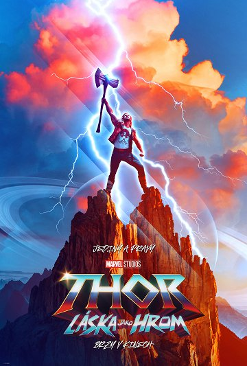 |
Thor: Láska jako hrom V kinech od: 07.07.2022 |
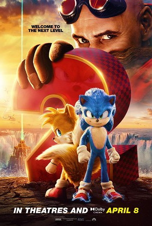 |
Ježek Sonic 2 V kinech od: 31.03.2022 Poté, co se Sonic usadil v Green Hills, je připraven na větší svobodu a Tom (James Marsden) a Maddie (Tika Sumpter) se dohodnou, že ho nechají doma, zatímco jedou na dovolenou. Ale sotva jsou pryč, když se Dr. Robotnik (Jim Carrey) vrátí,... |
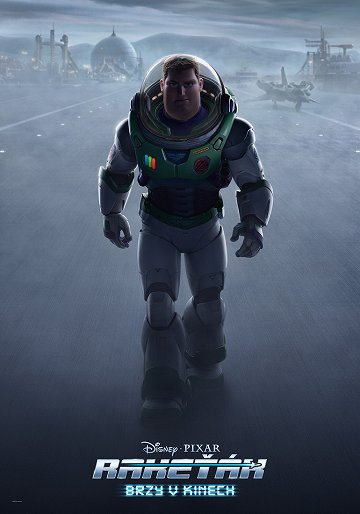 |
Rakeťák V kinech od: 16.06.2022 |